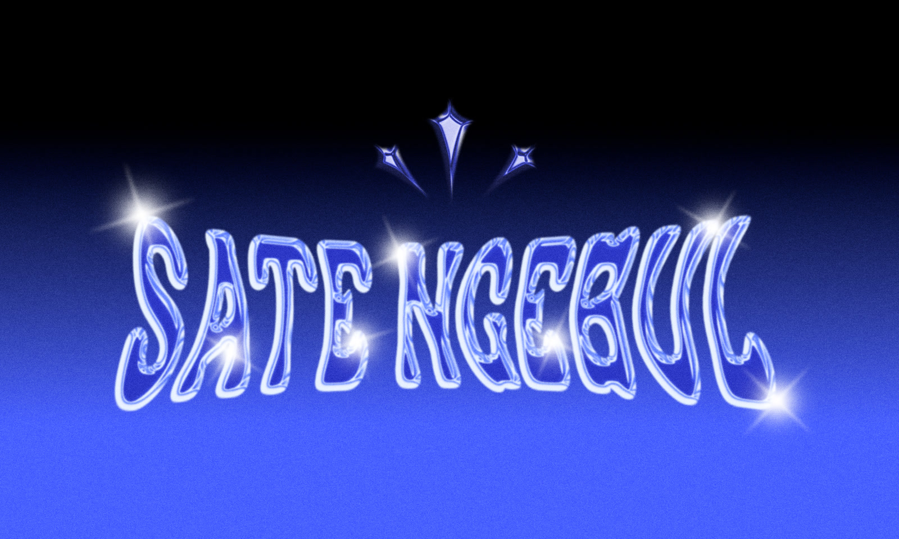

Graphic Designer & Video Editor
Desain visual untuk promosi digital dan kebutuhan dagang UMKM. Dari layout poster sampai animasi, dikerjakan di tools industri standar.
Portfolio / 2026
Latar belakang Multimedia, cara pikir Informatika. Visual promosi untuk UMKM dan media otomotif.
Saya Ikhsan Nur Pratama, 21 tahun, mahasiswa Teknik Informatika Universitas Bakrie dengan latar belakang Multimedia di SMK.
Di kampus saya menulis kode, memecahkan masalah, dan memahami cara sistem bekerja. Di luar kampus saya membangun visual promosi untuk UMKM dan media otomotif. Dua dunia ini jarang bertemu di satu orang, dan di sinilah saya bekerja.
Portfolio ini berisi karya yang sudah saya kerjakan: poster, banner, standing banner, sampai video cinematic dengan visual effect.

Desain visual untuk promosi digital dan kebutuhan dagang UMKM. Dari layout poster sampai animasi, dikerjakan di tools industri standar.
Paham segitiga exposure, color grading, dan cara memilih sudut pengambilan gambar supaya hasilnya konsisten dengan brief.
Algoritma, pemrograman berorientasi objek, dan problem solving. Bahasa yang saya pakai sehari-hari di kampus.
Best Project
Editing visual cinematic yang dipadukan dengan visual effect untuk media otomotif. Tujuannya satu: membuat orang berhenti scroll.
Butuh poster, banner, atau video untuk jualanmu? Kirim brief singkat, saya balas dengan estimasi.